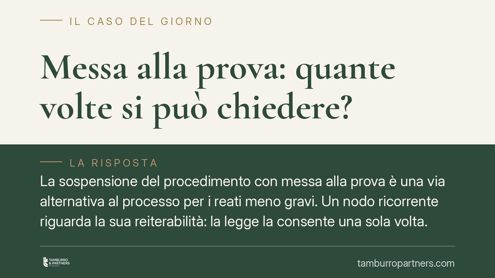

Messa alla prova: quante volte si può chiedere?
La sospensione del procedimento con messa alla prova è una via alternativa al processo per i reati meno gravi. Un nodo ricorrente riguarda la sua reiterabilità: la legge la consente una sola volta. Capire perché questo limite non confligge con la presunzione di innocenza è decisivo per chi valuta la strategia difensiva.

Il tema: un beneficio che si gioca una volta sola
La messa alla prova (spesso abbreviata in "MAP") consente all'imputato di sospendere il processo e svolgere un programma di trattamento: lavoro di pubblica utilità, attività risarcitorie, condotte riparatorie e, dove possibile, mediazione con la persona offesa. Se la prova ha esito positivo, il reato si estingue.
Il punto controverso è la reiterabilità. La domanda pratica è semplice: chi ha già beneficiato della messa alla prova può richiederla di nuovo in un diverso procedimento? La risposta che emerge dal testo normativo è negativa, e vale la pena capirne le ragioni.
Inquadramento normativo
L'istituto è disciplinato dall'art. 168 bis del codice penale, introdotto dalla legge n. 67/2014. La norma individua l'ambito applicativo nei procedimenti per reati puniti con pena edittale detentiva non superiore nel massimo a quattro anni, sola, congiunta o alternativa alla pena pecuniaria, nonché per i reati indicati dall'art. 550, comma 2, c.p.p. (citazione diretta a giudizio).
Lo stesso art. 168 bis c.p. stabilisce che la sospensione del procedimento con messa alla prova non può essere concessa più di una volta. Si tratta di un limite che riguarda il beneficio in sé, non il singolo procedimento: una volta fruito, l'istituto non è più disponibile per fatti successivi.
> Nota di verifica: l'esatta collocazione del limite all'interno dei commi dell'art. 168 bis c.p. va riscontrata sul testo vigente della norma prima di qualsiasi utilizzo in sede difensiva [da_verificare].
Sul rapporto tra questo limite e la presunzione di innocenza (art. 27, comma 2, Cost.) si registra un dibattito. La tesi prevalente valorizza la natura premiale e risocializzante dell'istituto: la messa alla prova non presuppone un accertamento di colpevolezza, ma un'opzione dell'imputato che rinuncia al pieno dispiegarsi del processo in cambio di un percorso trattamentale. L'unicità del beneficio, in questa lettura, è una scelta di politica criminale sulla "premialità", non una sanzione anticipata. Per questo non si pone in contrasto con la presunzione di innocenza.
> Nota di verifica: eventuali pronunce della Corte Costituzionale sul punto devono essere citate solo previa individuazione degli estremi esatti su banca dati ufficiale [da_verificare].
Perché il limite ha senso
La logica è coerente con la funzione dell'istituto. La messa alla prova è pensata come occasione di reinserimento offerta a chi, di norma, non ha un percorso penale strutturato. Renderla ripetibile significherebbe trasformarla in una clausola di impunità ciclica, svuotandone la finalità e l'effetto deterrente.
Dal punto di vista dell'imputato, questo comporta una conseguenza concreta: la decisione se chiedere la messa alla prova non è neutra. Una volta spesa, non è più recuperabile per fatti futuri, anche più lievi o per i quali il percorso trattamentale sarebbe stato più agevole.
Implicazioni pratiche
Per chi si trova imputato di un reato che rientra nei limiti edittali dell'art. 168 bis c.p., la valutazione va impostata in prospettiva.
Chi ha già fruito del beneficio in passato deve sapere che una nuova istanza sarà con ogni probabilità dichiarata inammissibile. Chi invece non lo ha mai utilizzato affronta una scelta strategica: la messa alla prova è spesso vantaggiosa, ma consuma una risorsa processuale irripetibile.
Rileva inoltre la qualità del programma di trattamento, predisposto con i servizi di esecuzione penale esterna (UEPE). Un programma solido incide sull'esito positivo e, di conseguenza, sull'estinzione del reato. È opportuna una valutazione caso per caso, che tenga conto del profilo dell'imputato e della natura dell'accusa.
Cosa fare in concreto
- Verifica i precedenti. Accerta se hai già usufruito della messa alla prova in un procedimento anteriore: in caso affermativo, la nuova istanza è preclusa.
- Controlla i limiti di pena. Confronta la pena edittale massima del reato contestato con la soglia dei quattro anni e con l'elenco dell'art. 550, comma 2, c.p.p.
- Valuta la convenienza nel tempo. Considera che il beneficio è unico: pondera se spenderlo ora o conservarlo rispetto a un rischio futuro concreto.
- Cura il programma di trattamento. Collabora con i servizi UEPE per costruire un percorso credibile, che aumenti le probabilità di esito positivo.
- Formalizza nei termini. Rispetta i tempi processuali per la presentazione dell'istanza, che variano a seconda della fase del procedimento.
Conclusione
La messa alla prova resta uno strumento di deflazione e reinserimento tra i più utili per i reati minori. Il suo limite di reiterabilità ne definisce il peso: è un'opportunità che va usata con consapevolezza, non in automatico.
Ogni condominio ha una storia a sé.
Se gestisci un'amministrazione e vuoi un confronto su una specifica questione condominiale, scrivi allo studio. Ti rispondiamo entro un giorno lavorativo.